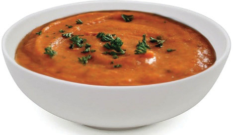
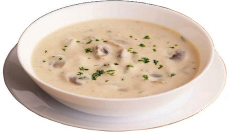

Puree soups: These are made by simmering dried or fresh starchy vegetables in stock or water. Thereafter, they are blended or crushed to form a thick consistency, called puree soup. The ingredients in the pureed soup are typically cooked until soft and then blended until smooth, resulting in a heavy consistency texture with no visible pieces of food materials. They may be made from rice, dried legumes such as peas, or fresh starchy vegetables such as potatoes. Some common ingredients used to make puree soups include vegetables like tomatoes, carrots, potatoes, peas, or cauliflower. Fruits like apples, pears, or pumpkins can also be used in sweet puree soups. Figure 5.19 shows a puree of vegetable soup.

Cream soups: Cream soups are a type of soup known for their rich and creamy texture. They are achieved by incorporating dairy products such as cream, milk, or butter into the soup. These soups are smooth and soft in consistency. Cream soups can be made with a variety of ingredients, including vegetables, cream, seafood, poultry, or meat. They are seasoned with herbs, spices, and other flavourings to enhance their taste. Examples of cream soup include tomato soup, mushroom soup and chicken soup. Figure 5.20 shows the cream of mushroom soup.
